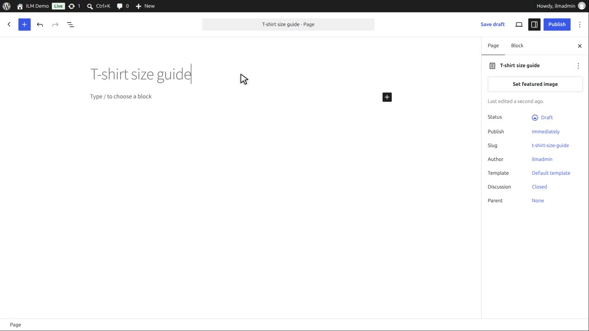
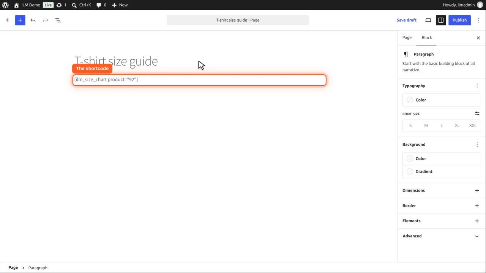
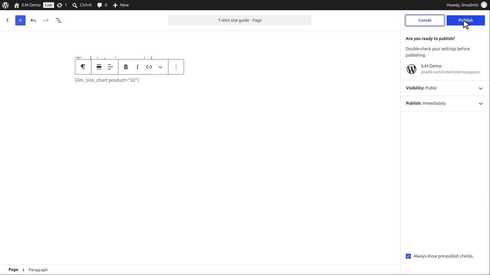
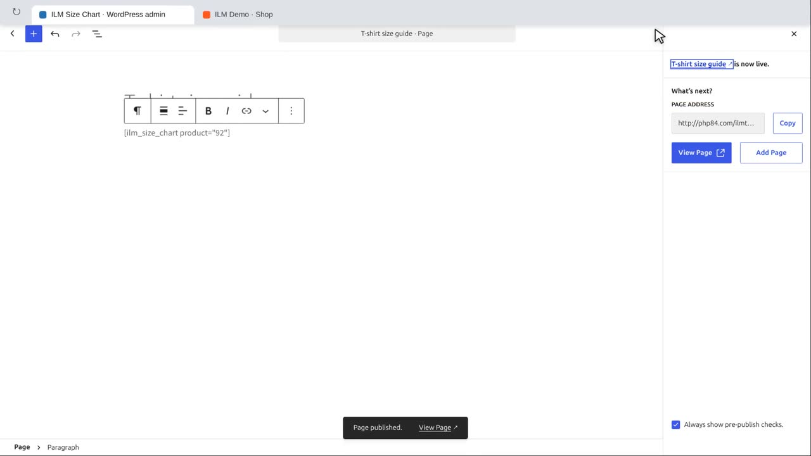
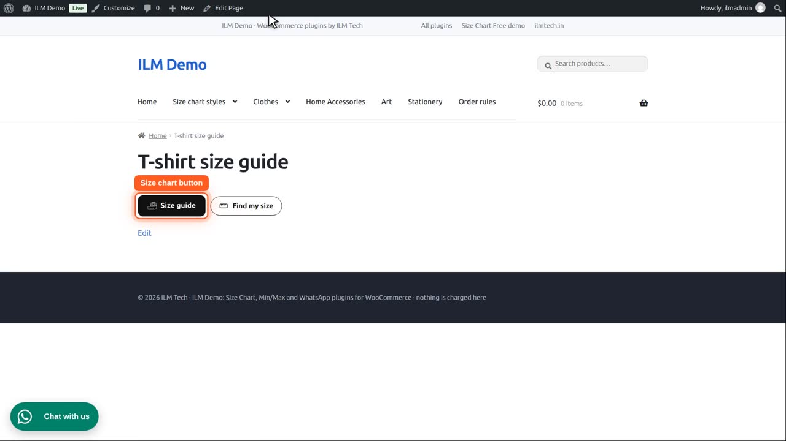
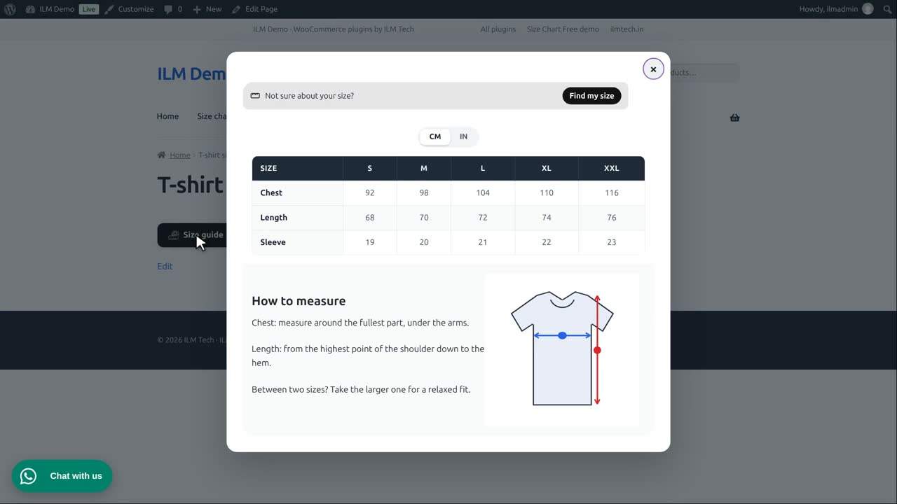

| Shortcode | What it shows |
|---|---|
[ilm_size_chart] | The chart of the product on the current page, for example in a product description or a page builder template. |
[ilm_size_chart product="123"] | The chart of that product, on any page or post. 123 is the product ID. |
A product with no matching chart shows nothing.
Open Pages, Add New Page, and give it a title. We make a size guide page for our T-shirt.

In the page, type the shortcode: ilm size chart, in square brackets, with product equals the ID of the product. 92 is our T-shirt. You see the product ID in the product list when the mouse is over a product.

Click Publish, check the settings, and click Publish again.

The page is live.

Open the page in the shop. The shortcode shows the T-shirt chart exactly as on the product page: here its Size Chart button.

It opens the same popup, with the same design and unit switch.

Without the product part, the shortcode shows the chart of the current product. That is handy in a product description or a page builder template. Products with no matching chart show nothing.